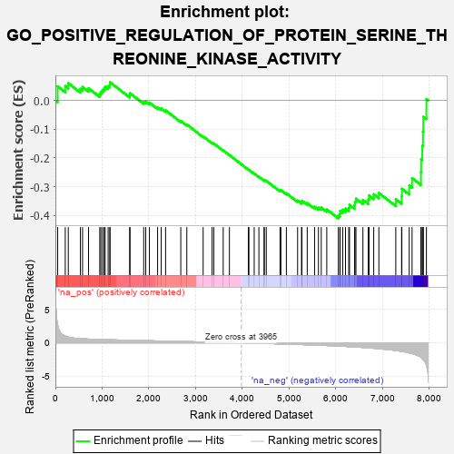
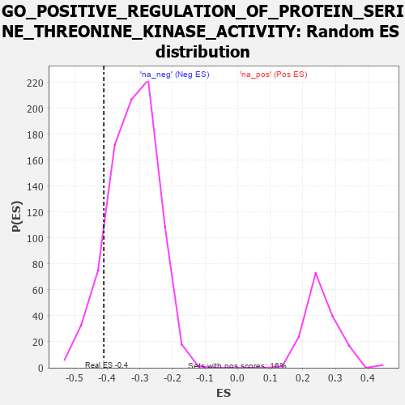

| | | Dataset | 7d |
| Phenotype | NoPhenotypeAvailable |
| Upregulated in class | na_neg |
| GeneSet | GO_POSITIVE_REGULATION_OF_PROTEIN_SERINE_THREONINE_KINASE_ACTIVITY |
| Enrichment Score (ES) | -0.4104778 |
| Normalized Enrichment Score (NES) | -1.2750447 |
| Nominal p-value | 0.12455516 |
| FDR q-value | 0.50291187 |
| FWER p-Value | 1.0 |
Table: GSEA Results Summary

Fig 1: Enrichment plot: GO_POSITIVE_REGULATION_OF_PROTEIN_SERINE_THREONINE_KINASE_ACTIVITY
Profile of the Running ES Score & Positions of GeneSet Members on the Rank Ordered List
| PROBE | GENE SYMBOL | GENE_TITLE | RANK IN GENE LIST | RANK METRIC SCORE | RUNNING ES | CORE ENRICHMENT | | 1 | TGFB3 | | | 49 | 2.654 | 0.0488 | No |
| 2 | SPDYA | | | 211 | 1.026 | 0.0497 | No |
| 3 | HGF | | | 276 | 0.870 | 0.0596 | No |
| 4 | PKN1 | | | 535 | 0.619 | 0.0398 | No |
| 5 | CCNB1 | | | 581 | 0.601 | 0.0466 | No |
| 6 | CDC6 | | | 709 | 0.557 | 0.0420 | No |
| 7 | CCND2 | | | 949 | 0.496 | 0.0220 | No |
| 8 | DVL3 | | | 971 | 0.490 | 0.0295 | No |
| 9 | TELO2 | | | 1006 | 0.482 | 0.0352 | No |
| 10 | AKT1 | | | 1040 | 0.476 | 0.0409 | No |
| 11 | FZD10 | | | 1065 | 0.470 | 0.0476 | No |
| 12 | SRC | | | 1128 | 0.459 | 0.0493 | No |
| 13 | CKS2 | | | 1165 | 0.452 | 0.0541 | No |
| 14 | CCNY | | | 1168 | 0.451 | 0.0632 | No |
| 15 | ERP29 | | | 1589 | 0.376 | 0.0178 | No |
| 16 | CCNK | | | 1596 | 0.374 | 0.0248 | No |
| 17 | PAK3 | | | 1889 | 0.322 | -0.0055 | No |
| 18 | HACD3 | | | 1932 | 0.315 | -0.0043 | No |
| 19 | RAF1 | | | 2011 | 0.303 | -0.0079 | No |
| 20 | SYK | | | 2186 | 0.278 | -0.0241 | No |
| 21 | SHC2 | | | 2263 | 0.266 | -0.0282 | No |
| 22 | MIF | | | 2357 | 0.252 | -0.0348 | No |
| 23 | SASH1 | | | 2682 | 0.201 | -0.0716 | No |
| 24 | SYAP1 | | | 2811 | 0.182 | -0.0841 | No |
| 25 | ERN2 | | | 3160 | 0.129 | -0.1255 | No |
| 26 | TAB1 | | | 3351 | 0.097 | -0.1475 | No |
| 27 | DDX3X | | | 3388 | 0.091 | -0.1502 | No |
| 28 | MAPK3 | | | 3589 | 0.062 | -0.1742 | No |
| 29 | DAXX | | | 3722 | 0.038 | -0.1901 | No |
| 30 | PLCE1 | | | 4127 | -0.028 | -0.2407 | No |
| 31 | CRK | | | 4139 | -0.031 | -0.2415 | No |
| 32 | RPTOR | | | 4252 | -0.050 | -0.2546 | No |
| 33 | ADRB2 | | | 4352 | -0.068 | -0.2657 | No |
| 34 | ERCC6 | | | 4464 | -0.087 | -0.2780 | No |
| 35 | LRRK2 | | | 4467 | -0.087 | -0.2764 | No |
| 36 | ILK | | | 4510 | -0.096 | -0.2797 | No |
| 37 | TNIK | | | 4804 | -0.158 | -0.3135 | No |
| 38 | TAOK3 | | | 4823 | -0.162 | -0.3124 | No |
| 39 | FZD4 | | | 4940 | -0.186 | -0.3233 | No |
| 40 | NEK10 | | | 5180 | -0.244 | -0.3485 | No |
| 41 | CDK1 | | | 5264 | -0.262 | -0.3536 | No |
| 42 | EPHA4 | | | 5273 | -0.265 | -0.3491 | No |
| 43 | FZD5 | | | 5386 | -0.292 | -0.3572 | No |
| 44 | FGFR1 | | | 5543 | -0.332 | -0.3701 | No |
| 45 | ROR2 | | | 5626 | -0.353 | -0.3732 | No |
| 46 | MADD | | | 5686 | -0.371 | -0.3729 | No |
| 47 | CCNT2 | | | 5804 | -0.406 | -0.3793 | No |
| 48 | FZD8 | | | 6051 | -0.490 | -0.4003 | Yes |
| 49 | DBNL | | | 6084 | -0.501 | -0.3940 | Yes |
| 50 | UBB | | | 6090 | -0.503 | -0.3842 | Yes |
| 51 | STK4 | | | 6145 | -0.518 | -0.3803 | Yes |
| 52 | INSR | | | 6204 | -0.538 | -0.3765 | Yes |
| 53 | STK39 | | | 6274 | -0.563 | -0.3736 | Yes |
| 54 | TRAF7 | | | 6290 | -0.571 | -0.3636 | Yes |
| 55 | RALB | | | 6399 | -0.617 | -0.3645 | Yes |
| 56 | UBE2N | | | 6407 | -0.621 | -0.3525 | Yes |
| 57 | CSK | | | 6428 | -0.630 | -0.3420 | Yes |
| 58 | ROBO1 | | | 6577 | -0.699 | -0.3463 | Yes |
| 59 | PAK1 | | | 6691 | -0.757 | -0.3449 | Yes |
| 60 | EGFR | | | 6708 | -0.765 | -0.3310 | Yes |
| 61 | ADAM9 | | | 6808 | -0.819 | -0.3266 | Yes |
| 62 | CSPG4 | | | 6918 | -0.878 | -0.3222 | Yes |
| 63 | CIB1 | | | 7280 | -1.152 | -0.3440 | Yes |
| 64 | GRM1 | | | 7404 | -1.272 | -0.3333 | Yes |
| 65 | UBC | | | 7410 | -1.274 | -0.3075 | Yes |
| 66 | CALM1 | | | 7567 | -1.499 | -0.2962 | Yes |
| 67 | PKD1 | | | 7628 | -1.611 | -0.2704 | Yes |
| 68 | TRAF6 | | | 7818 | -2.157 | -0.2496 | Yes |
| 69 | PKD2 | | | 7822 | -2.167 | -0.2050 | Yes |
| 70 | GRM4 | | | 7847 | -2.393 | -0.1585 | Yes |
| 71 | TRAF2 | | | 7861 | -2.481 | -0.1087 | Yes |
| 72 | CALM3 | | | 7869 | -2.525 | -0.0572 | Yes |
| 73 | ARRB1 | | | 7935 | -3.377 | 0.0046 | Yes |
Table: GSEA details [plain text format]

Fig 2: GO_POSITIVE_REGULATION_OF_PROTEIN_SERINE_THREONINE_KINASE_ACTIVITY: Random ES distribution
Gene set null distribution of ES for GO_POSITIVE_REGULATION_OF_PROTEIN_SERINE_THREONINE_KINASE_ACTIVITY